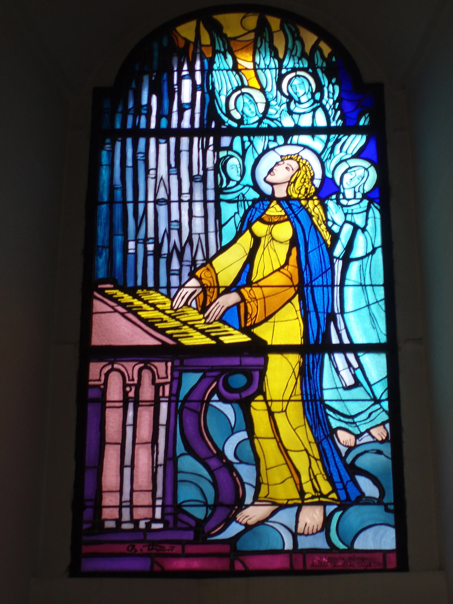
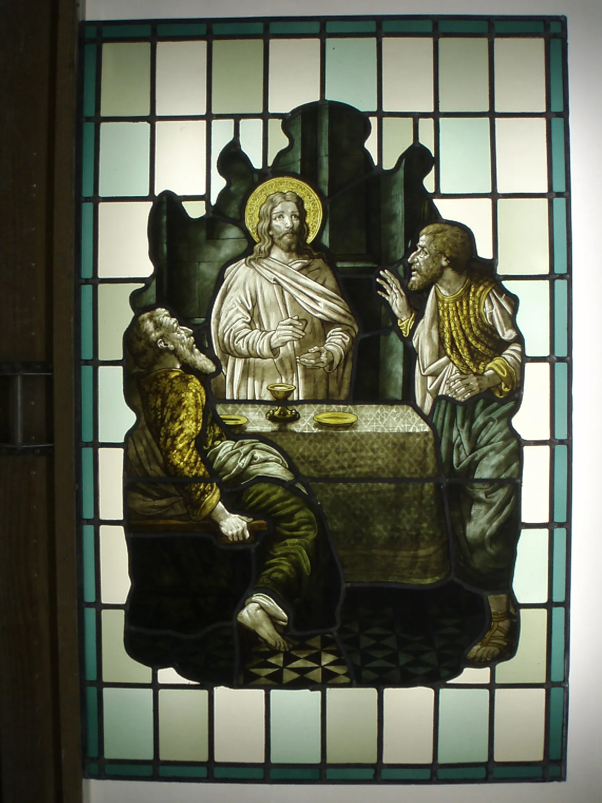
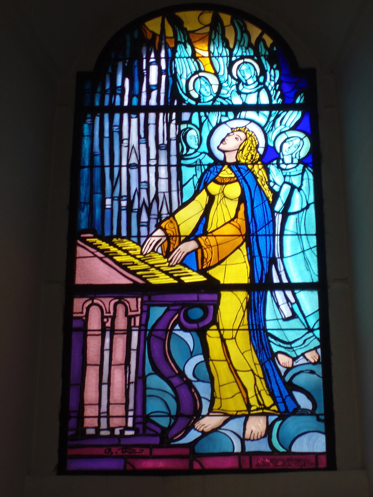
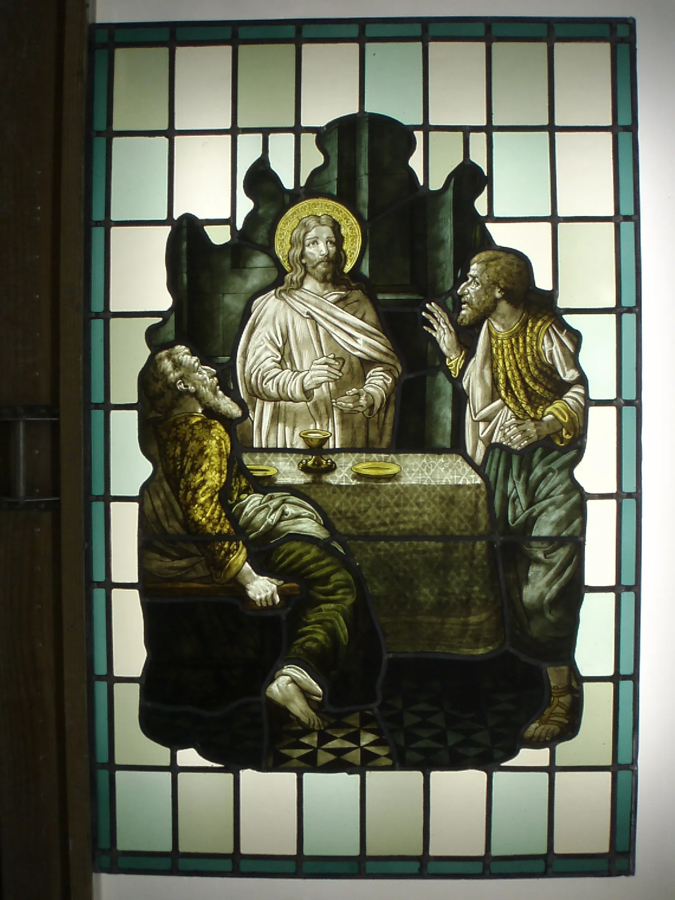

The story behind Vitros…
I am Igor Durakovic, born in 1971 in Osijek, Croatia.
Inspiration and Early Beginnings
This is the story about my passion and my work.
After Croatia emerged from the horrors of the War
of Independence in the 90’s, it was apparent that the
war had left many cultural sites and buildings in the
need of urgent restoration.
Having stained glass windows, churches and other
historical buildings were especially affected.
Mentorship and Training Under Mr. Drew Anderson
Realizing the need to help with the restoration, a
specialist for stained glass from the United Kingdom
came to Croatia to share his knowledge – Mr. Drew
Anderson.
Mr. Drew Anderson is a stained-glass
conservator, expert in the field of glass
restauration. He is the Chair of the Conservation
Technical Committee of the American Corpus Vitrearum,
a member of International Scientific Committee for the
Conservation of Stained glass, and is responsible for
the Metropolitan Museum of Art’s stained-glass
collection.
 



Training and Early Projects
With his vast knowledge and experience, Mr Anderson
led a workshop on the restoration of stained glass
in Osijek in 1994, the center of the Eastern region
of Croatia, which was one of the most devastated
regions of Croatia after the War.
I was a member of the team who attended his
workshop. Under Mr. Anderson’s mentorship, we
learned a lot about the restoration of stained
glass, and then started to work on the restoration
of windows in St. Peter and Paul’s Co-Cathedral in
Osijek.
Continued Training in London
After that valuable experience, we continued with the training and went to Goddard and Gibbs Stained Glass Studio in London to further develop our skills and competence. All that helped me to gain extensive knowledge in the field of stained glass conservation.
Returning to Croatia and Building Expertise
Intensive Restoration Work
Once back to Croatia, I started to work intensively on the restoration. In the following 22 years, I restored hundreds of windows. Some of the windows were completely destroyed, so I had to research archive documents and photographs to be able to reconstruct a window according to the original design.
Collaborations and Designing New Windows
I also cooperated with artists from the Croatian Academy of Arts to produce new windows. Later on, I started creating my own designs and made new stained glass windows according to clients’ wishes.


Recognition and Professional Achievements
During that long period, I broadened my experience,
which became the base of my high-quality work in
restoring, designing, and producing stained glass
windows.
My expertise was further proved when the
Croatian Ministry of Culture issued me a license to
work on Croatian heritage sites. Furthermore, I
received the title of Stained Glass Restoration
Technician.
Relocation to Germany and New Partnerships
In 2016 I moved from Croatia to Freiburg, Germany,
where I still live and work.
Soon after moving to Freiburg I met Mr. Rainer
Fiolka Pitschat, a glass art expert.
We started our cooperation on projects and
since then I work in cooperation with his “Atelier
for Glass Art“ in Freiburg im Breisgau.
Get in Touch with Me
Discover how I can bring your stained glass vision to life. Contact us today!